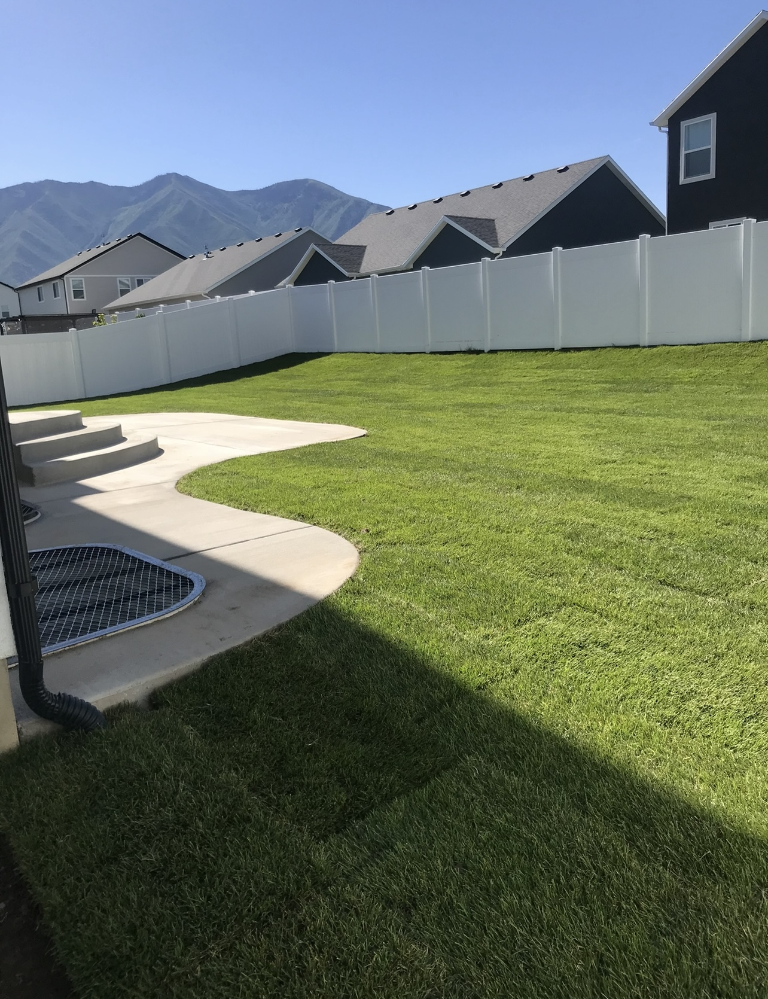

My Work
Here are a few recent projects I've worked on around Utah Valley. I like keeping my work clean, simple, and built to last so homeowners feel good about the final result.
Project Gallery
These are the kinds of projects I enjoy doing for local homeowners, from lawn improvements to borders, edging, and tree-area cleanups. Free estimates available. Se habla español.
Backyard Lawn Projects
Backyard lawn work focused on cleaner lines, healthier turf, and a more finished overall presentation.

Backyard Lawn Refresh

Finished Lawn Upgrade
Landscape Borders & Edging
Hardscape and barrier work that adds structure, definition, and a more organized look to the yard.

Block Barrier Installation

Finished Barrier Upgrade
Tree Projects
Tree-area improvements that create a tidier focal point and bring more balance to the landscape.

Tree Area Before